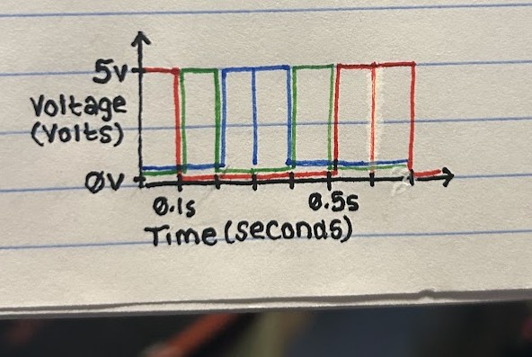

Here is all the documentation for Assignment 1: Blink!
The prompt is to create a schematic for at least 3 LEDs connected to my Arduino, implemented as a circuit on my breadboard, and to write firmware (in a .ino file) for the circuit that makes the LEDs blink in a pattern.
I chose to wire each LED to its own pin in order to control them independently. After the resistors, each circuit is connected to the same ground pin for simplicity and practicality. The type of resistor is based on calculation using Ohm's Law. For the red and green LEDs, using 5V minus a 1.8V drop for the LED, and 20mA (or 0.02A) of current (based on the optimal level to power these LEDs), I calculated that each required 160 ohms of resistance. Since I don't have a 160 ohm resistor, I rounded up to 220 ohms. I rounded up because, according to Ohm's law, this would slightly reduce the current to around 14.5mA, which only slightly reduces the brightness of the LED. If I rounded down, the current would increase beyond 20mA, which would risk the LED burning out. I followed this calculation process for the blue LED, which has a voltage drop of 3.3V. Using this value, I calculated 85 ohms of resistance, which I rounded up to 100 based on my available resistors.
On my breadboard, I used color-coordinated wires to connect each pin (2-4) to the positive side of each LED. I placed the three LEDs next to each other and used the flexibility of the resistors to connect the negative side of each LED to the same ground wire.
// set delay to 0.1 second
int timer = 100;
void setup() {
// for loop to initialize each pin (and associated LED) as an output:
for (int thisPin = 2; thisPin < 5; thisPin++) {
pinMode(thisPin, OUTPUT);
}
}
void loop() {
// loop from the lowest pin (2) to the highest (4):
for (int thisPin = 2; thisPin < 5; thisPin++) {
// turn the pin (and associated LED) on
digitalWrite(thisPin, HIGH);
// wait 1 second
delay(timer);
// turn the pin (and associated LED) off
digitalWrite(thisPin, LOW);
}
// loop from the highest pin (4) to the lowest (2):
for (int thisPin = 4; thisPin > 1; thisPin--) {
// turn the pin (and associated LED) on
digitalWrite(thisPin, HIGH);
// wait 1 second
delay(timer);
// turn the pin (and associated LED) off
digitalWrite(thisPin, LOW);
}
}
In my code, I use variables to set the pin number and delay time. I used the variable "timer" for delay time so that the delay would be consistent between sequences, and I could easily play around with the timing without changing each occurence. I used the variable "thisPin" so that I could initalize each pin and iterate through them in for-loops to create a fun sequence. It's worth noting that my code only blinks the pins in sequence, and using the variable in this way means I couldn't only blink pin3 with this code. However, since I'm not setting up any input and want to blink them all on a loop, that limitation isn't a problem.
.gif)
All that's missing is some rave music :-) ♪ ♫ ♪ ♫
1: Draw a graph where the X axis is time and the Y axis is voltage across the LEDs. Draw a line for each of your 3 LEDs.
This graph of Voltage vs Time shows how each LED is turned on in a forwards-backwards alternating sequence. The color of each line represents the respective color of LED. When each LED is turned on, the voltage jumps to 5V, and when it is turned off, the voltage immediately drops back to 0V. The sequence starts with red, then green, then blue, then repeats backwards, starting on blue, then back to green, then red, and repeating this sequence indefinitely. While each LED is turned on for 0.1s (or 100ms) at a time, blue and red are at the beginning and end of the sequence, resulting in each appearing to be on for 0.2s (or 200ms) at a time. Technically, they do turn off for a very brief moment in between, but it is so short that it is visually imperceptible (less than 0.013s). This is represented on the graph. Also, please note that the close parallel lines represent the same voltage/time for each LED, but are drawn to be as visually distinct as possible.
2: How many LEDs could you blink independently with your Arduino? How much current would that draw?
If I hooked up one LED to each digital pin, I could independently blink up to 14 LEDs. If they're blinking at separate times, meaning only one is on at any given point, it would draw 20mA of current. If they're blinking simultaneously, 14 LEDs would draw 280mA (or 0.28A) of current.
4: How fast do you need to blink your LEDs until you no longer can tell that they are blinking?
When testing this, I recorded 13ms as the longest delay I could use before I could visually detect any blinking.
5: Did you use AI tools in completing this assignment? If yes, please provide details on how/when, as well as a brief reflection. If no, you can either leave this question blank, or provide other information if you'd like.
I did not use AI tools in completing this assignment.